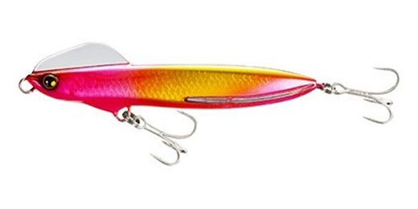
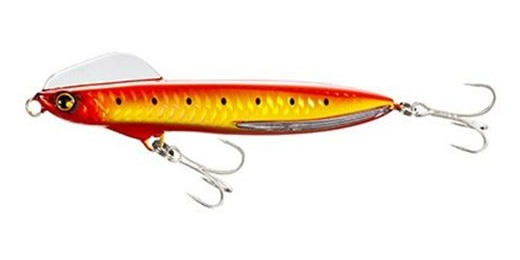
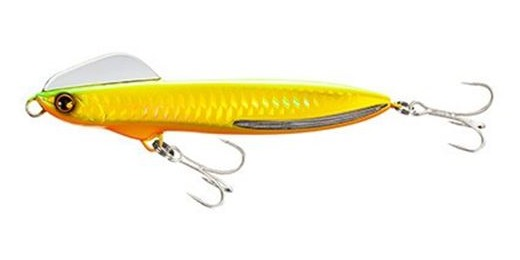
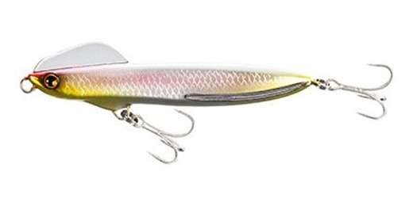

熱砂 ウィングビーム110HS
（Wing Beam 110HS）
熱砂 ウィングビーム110HS（Wing Beam 110HS）はSHIMANO（シマノ）熱砂シリーズのヘビーシンキングペンシルです。
メタルジグ並みの飛距離が魅力の「ウィングビーム80HS」をサイズアップしたモデル。平均飛距離91mの遠投性能と、シンペンなのにミノーのように強く泳ぐウォブリングを受け継ぎ、ボディが大きくなったぶんアピール力が高まっています。

画像出典:キャスティング オンラインストア
スペック
- メーカー
- SHIMANO（シマノ）
- 品番
- XG-K11T
- タイプ
- ヘビーシンキングペンシル
- 全長
- 110mm
- 自重
- 38g
- 飛距離
- 平均91m
- ターゲット
- ヒラメ・マゴチ・青物
- 価格
- 1,870円（税込）
- 発売
- 2020年4月
▼今すぐチェック

熱砂 ウィングビーム110HSの特徴
飛びと泳ぎは80HS譲り。サイズアップでアピール力を高めたヘビーシンキングペンシル
-
平均91mの遠投性能
メタルジグ並みに飛ぶ80HSの飛距離性能をそのまま受け継ぎ、平均飛距離は91m。サーフの沖のブレイクや離岸流まで届かせやすい。
-
ウイングヘッドが生む強いウォブリング
ボディが倒れようとするとヘッドのウイングが水を噛んで姿勢を戻し、反対に倒れようとするとまた戻す。この繰り返しで、シンペンなのにミノーのようにバタバタとアピール力のあるウォブリングを生む。
-
貫通式ワイヤーで大物も安心
80HSと同じく貫通式ワイヤーを採用。大型のヒラメや青物とのやり取りも安心して行える。
熱砂 ウィングビーム110HSの使い方
基本は遠投してからのただ巻き。着水後にボトムまで沈め、底を擦らない程度の速さで巻いてくると、ウイングヘッドのウォブリングで広く魚にアピールできます。
ボトム付近を探る時は、巻きの途中で止めてフォールを入れるのも有効。波っ気がある時や大きいベイトを食べている時は110HS、穏やかな日やベイトが小さい時は80HSと使い分けるのが基本です。
熱砂 ウィングビーム110HSの得意な状況
サーフでヒラメ・マゴチや青物を狙う時、特に大きめのベイトを食べている状況や、波っ気のある状況が最大の出番です。
80HSより大きいシルエットで存在感を出せるので、波の中でもルアーに気づかせたい場面で選びたい1本です。
遠投とアピール力で、波のある日でもサーフのヒラメや青物が釣れるのが強みです。
ワンポイント
貫通式ワイヤーで強度があるので、青物が回ってくるサーフでも安心して投げられます。
飛距離を活かして、まずは沖のブレイクや離岸流の向こうまで投げ、手前に向かってレンジを探りながら引いてくると、反応のある距離をつかみやすくなります。
ウィングビームの使い分け
| モデル | 全長／自重 | 得意な場面 |
|---|---|---|
| ウィングビーム80HS | 80mm／35g | 平均97m超の遠投。小さめのベイトや穏やかな日に |
| ウィングビーム110HS | 110mm／38g | 大きめのベイトや波っ気のある日。アピール重視（本記事のモデル） |
ウィングビームは80HSと110HSの2サイズ。飛びと泳ぎの考え方は同じで、ベイトの大きさと波の強さで選び分けます。ウィングビーム80HSの記事もあわせてチェックしてみてください。
人気カラー
熱砂 ウィングビーム110HSは全10色展開。その中から人気カラーを紹介します。

キョウリンピンクピンク系の定番。朝夕マズメや濁りの日のアピールに。

ピンクファイヤーサーフで目立つピンク系。ローライト時に存在感を出したい時に。

ヒラメゴールドヒラメ狙いを意識したゴールド系。濁りや曇りの日に。

キョウリンキスキスをイメージしたナチュラル系。澄み潮や日中に。
画像出典:キャスティング オンラインストア
▼今すぐチェック
熱砂 ウィングビーム110HSに似ているルアー
-
 熱砂 ウィングビーム80HS
シマノ
詳細はこちら＞
熱砂 ウィングビーム80HS
シマノ
詳細はこちら＞
同じウィングビームの80mm・35g。平均97m超の遠投で、ベイトが小さい時や穏やかな日に。
-
 オーバードライブ107S
ダイワ
詳細はこちら＞
オーバードライブ107S
ダイワ
詳細はこちら＞
107mm・40gのヘビーシンキングペンシル。大型ベイトパターンを遠投で攻める考え方が近い。
-
 ウルトラスラローム120S
HIGH RAD
詳細はこちら＞
ウルトラスラローム120S
HIGH RAD
詳細はこちら＞
シルエットの形が似ている、超ワイドS字×遠投のS字系ルアー。シャローでS字で見せたい時に。